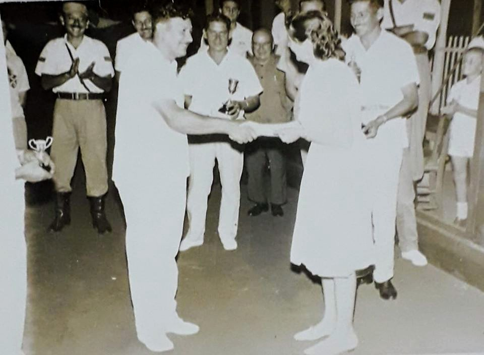
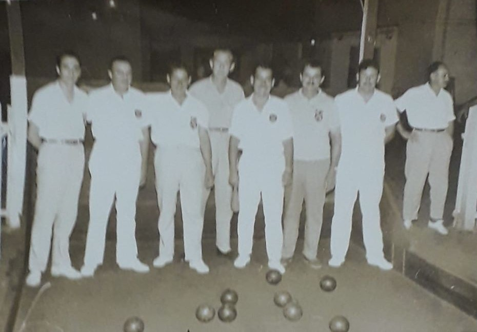
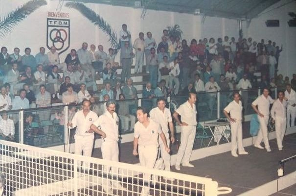
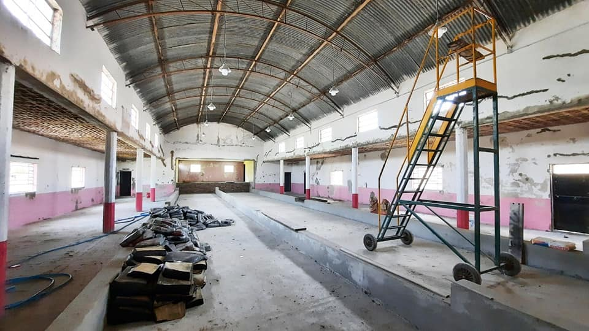

El Club Social y Bochófilo Jesús de Nazareno, fue fundado en la década de 1950, en la ciudad de Jesús Nazareno. Su primera Comisión Directiva la constituyeron los Sres. Domingo Barbero (Presidente), Anselmo Cravero (Vice-Presidente), Francisco Ponzo (Tesorero), Miguel Piana (Pro-Tesorero), Victorino Giovannini (Secretario), Atilio Fernandez (Pro-Secretario), Vocales: Alfredo Barba, Rubén Peralta y Andrés Vagliente, Revisores de Cuentas; Miguel Barbero y Jacinto Tortone.
Se inicia con el objeto de practicar el deporte de las bochas, y a tal fin se construyen dos canchas en un lote sobre la calle principal de Los Sembrados cedido por el Sr. Domingo Barbero, en calidad de préstamo.
En el año 1963 asume la presidencia Victorino Giovannini, el cual es reelegido en el cargo hasta el año 1976, cumpliendo un ciclo de 13 años ininterrumpidos en el cargo.
En esos años se plantea un desacuerdo con algunos miembros de la Comisión, y por esa razón las canchas son trasladadas al local del Sr. Bautista Bauducco donde funcionaba un bar y una dependencia del Correo Argentino.
Transcurridos cinco años funcionando en ese lugar, se decide trasladar el club a San Vicente, al bar y parrillada “El Amanecer” de los Sres. Ponzo y Lopez. Al poco tiempo se fusiona con el Club “Los Tres Leones”, institución que desapareciera con la fusión antes mencionada.
Transcurre el tiempo y se adquiere al Sr. Jacinto Tortone, un lote de terreno donde se encuentra actualmente ubicada el Bar Comedor y Sede Social. Para acceder a esta adquisición, aportan dinero en forma voluntaria un grupo de personas, entre ellos los miembros de la comisión entre ellos están Juan Busso, Antonio Busso, Antonio Aira, Barbero Hnos., Miguel Piana, Giovannini Hnos., Inolfo Taverna, Anselmo Cravero entre otros.
En el año 1981 se comienza a construir las canchas de bochas.
Después de unos años se construyen el salón, una pieza depósito y una galería cerrada. Un grupo de socios del club construyen una galería lateral del largo de las canchas completando con la cocina, una habitación y el asador.
En el año 1987 y por Decreto Provincial Nº 2669 se le concede la Personería Jurídica.
La actividad bochófila de la época en muy importante, siempre afiliados a la Asociación de Bochas del Oeste Santafesino, obteniendo la institución importantes campeonatos a nivel local, regional y provincial, siendo el principal logro el título de Campeón Provincial.
Luego devienen épocas de escasa actividad, habiendo decaído el deporte en la institución.
Ya en el año 1998, un grupo de personas propone hacer fútbol en el club, actividad nueva para los dirigentes que quedaban y les abriría una entusiasta propuesta para que la institución continuara como entidad deportiva. Es así que se comienza a gestar una escuela de fútbol en un terreno ubicado en la zona norte de la localidad de San Vicente, propiedad del Señor Alfredo Yamil Jalit, quien gentilmente hace donación de un predio de 3,86 has de terreno para que se comiencen a construir las canchas de fútbol y los vestuarios para la esta actividad deportiva. Transcurre el año 1999, el Club Bochófilo Bochazo se afilia a la Liga Rafaelina de Fútbol, comenzando a participar de los torneos de divisiones inferiores primeramente y luego de transcurridos dos años participará como hasta el presente con Reserva y Primera divisiones.
Se obtienen logros en divisiones inferiores, llegando a ganar en dos oportunidades la copa challenger que la liga disponía para los clubes que obtuvieren los torneos absolutos en tres oportunidades consecutivas ó cinco alternadas.
La institución crece en obras, habiéndose concretado en el año 2014 la iluminación de la cancha principal, con estándares aprobados por la Liga para la realización de partidos nocturnos, además de la obra de riego artificial.
En el 2015 sumamos una nueva actividad deportiva, siendo la primera escuela de hóckey para damas y niñas en la localidad, pensando en el sector femenino que no tenía un deporte acorde para practicar. La madrina de la actividad es la Srta. Ayelén STEPNICK, ex jugadora de la Selección Argentina de Hockey (Las Leonas). Esta realidad cuenta con aproximadamente 130 deportistas que desarrollan esta actividad.



